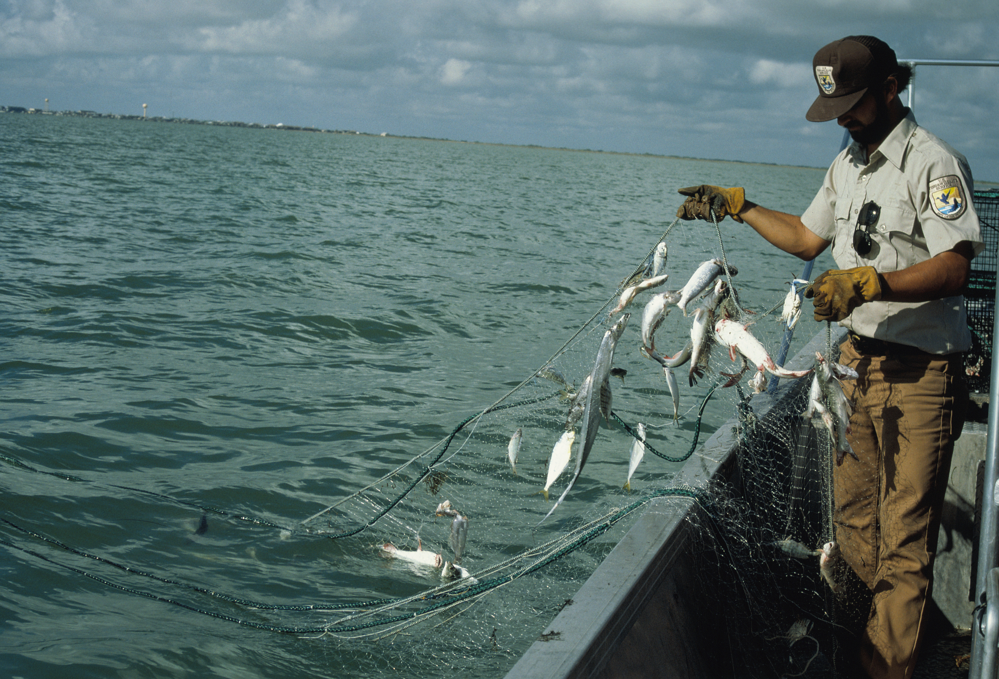
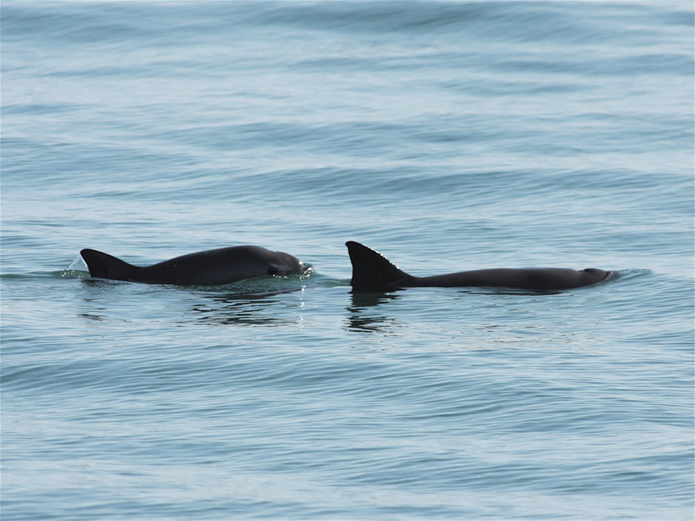

Click
here to donate to support oceanic wildlife
The cause of the Issue
Whist the Vaquita have never been hunted directly, they are often caught. Illegal fishing using gillnets, in the aim of catching the critically endangered Totoaba fish, which is a similar size to the Vaquita. These nets frequently catch Vaquita, which is the primary reason for the sudden loss of population. Today, there are only 10 to 20 Vaquitas in existence.

A worker checking gillnets
The situation
In 2015, a conservation program for both the Vaquita and the Totoaba was announced. This included a 2-year ban on gillnet fishing in the region, which included enforcement the Navy and support for fishermen that would be impacted by the changes.
Even with these changes, the population was believed to have declined to around 30 by November 2016, with at least 3 Vaquitas still being caught in nets. This instigated a captive breeding program, in the hope that the population could be increased before release.
In 2017, the gillnet ban was made permanent, with the USA also banning the importation of gillnet-harvested seafood from the Gulf of California later the same year.
By 2018, only 15-20 were predicted to remain, with sightings of 6 or 7. However, the sightings of multiple calves across the region led to increased optimism of possible conservation.
Last year a Vaquita was found caught in gillnets, indicating that they still pose a danger, even with a very low population. Studies now predict around 10-20 Vaquitas remain.
What can be done

Two Vaquita Swimming in the Gulf of California
Whilst the future for Vaquitas is not looking bright, there is still hope; as multiple calves have been sighted across the Vaquitas habitat. You can aid conservation efforts for the Vaquitas by donating to VIVA Vaquita Recovery Fund (using the donate button!).
However, other whilst Vaquitas are critically endangered, many other species are in a similar situation, but still without any conservation efforts for those species. These include animals like Blue Whales, Hawksbill Turtles and Sea Otters. All of which need help!